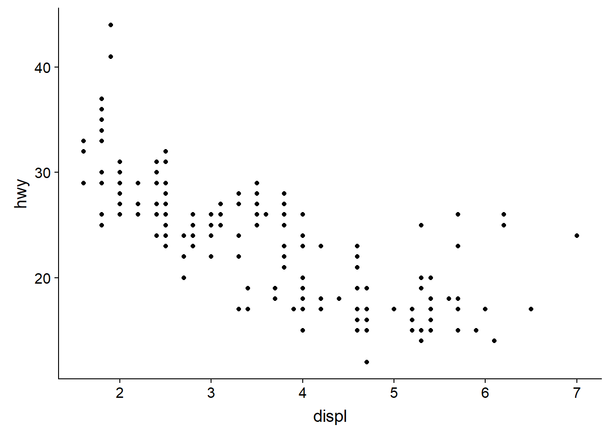
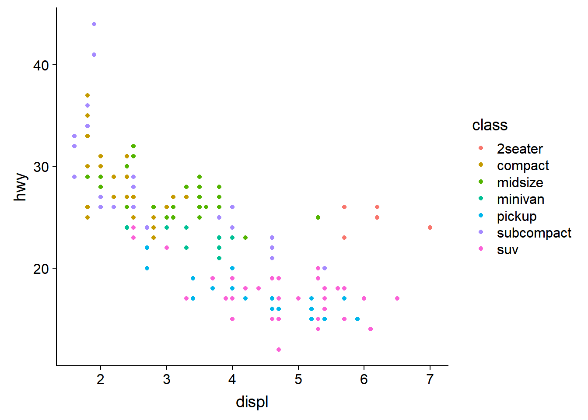

Chapter 2 Getting started in R and the tidyverse
Functions are a way to automate common tasks and R comes with a set of functions called the base package. We will be using some base functions in Chapter 5, but to introduce the concept of using functions we’ll begin with the tidyverse.
2.1 The tidyverse and tidy data
The tidyverse (Wickham 2017) is “an opinionated collection of R packages designed for data science” .
Tidyverse packages contain functions that “share an underlying design philosophy, grammar, and data structures.” It’s this philiosophy that makes tidyverse functions and packages relatively easy to learn and use.
Tidy data follows three principals for tabular data as proposed in the Tidy Data paper http://www.jstatsoft.org/v59/i10/paper :
- Every variable has its own column.
- Every observation has its own row.
- Each value has its own cell.
If our table was proteomics data then, we might have a set of variables such as the peptide sequence, mass or length observed for a number of peptides. Therefore each peptide would have a row with columns for peptide sequence, mass and length with the value for each variable in separate cells, as seen in Figure 2.1.

Figure 2.1: An example of tidy proteomics data
Often much of the work in any data analysis is getting our data into a tidy form.
We can’t do everything in the tidyverse, and everything we can do in the tidyverse can be done in what is called base R or other packages, but the motivation behind the tidyverse is to ease the pain of data manipulation.
With this in mind, the two tasks we are most likely to want to do in data science are:
- Visualise our data
- Automate our processes.
Taking our cue from R4DS let’s try an example.
2.2 Data visualisation
The ggplot2 package implements the grammer of graphics, for describing and building graphs.
The motivation here is twofold:
- To begin to grasp the grammar of graphics approach to creating plots. This will be our first example of automating a task using a function.
- To demonstrate how plotting is often the most useful thing we can do when trying to understand our data.
We’ll use the mpg dataset that comes with the tidyverse to examine the question do cars with big engines use more fuel than cars with small engines?
Try ?mpg to learn more about the data.
- Engine size in litres is in the
displcolumn. - Fuel efficiency on the highway in miles per gallon is given in the
hwycolumn.
To create a plot of engine size displ (x-axis) against fuel efficiency hwy (y-axis) we do the following:
- Use the
ggplot()function to create an empty graph. - Provide ggplot with a first input or argument of the data (here
mpg). - Then we follow the ggplot function with a
+sign to indicate we are going to add more code, followed by ageom_point()function to add a layer of points mapping some aesthetics for the x and y axes. - Mapping is always paired to aesthetics
aes(). An aesthetic is a visual property of the objects in your plot, such a point size, shape or point colour.
Therefore to plot engine size (x-axis) against fuel efficiency (y-axis) we use the following code:
ggplot(data = mpg) +
geom_point(mapping = aes(x = displ, y = hwy))
This plot shows a negative relationship between engine size and fuel efficiency.
Now try extending this code to include to add a colour aesthetic to the the aes() function, let colour = class, class being the veichle type. This should create a plot with as before but with the points coloured according to the viechle type to expand our understanding.
ggplot(data = mpg) +
geom_point(mapping = aes(x = displ, y = hwy, colour = class))
Now we can see that as we might expect, bigger cars such as SUVs tend to have bigger engines and are also less fuel efficient, but some smaller cars such as 2-seaters also have big engines and greater fuel efficiency. Hence we have a more nuanced view with this additional aesthetic.
Check out the ggplot2 documentation for all the aesthetic possibilities (and Google for examples): http://ggplot2.tidyverse.org/reference/
So now we have re-usable code snippet for generating plots in R:
ggplot(data = <DATA>) +
<GEOM_FUNCTION>(mapping = aes(<MAPPINGS>))Concretely, in our first example <DATA> was mpg, the <GEOM_FUNCTION> was geom_point() and the arguments we supplies to map our aesthetics <MAPPINGS> were x = displ, y = hwy.
As we can use this code for any tidy data set, hopefully you are beginning to see how a small amount of code can do a lot.
2.3 Workflow basics
Let’s run through the basics of working in R to conclude this chapter.
2.3.1 Assigning objects
Objects are just a way to store data inside the R environment. We create objects using the assignment operator <-:
mass_kg <- 55Read this as “mass_kg gets value 55” in your head.
Using <- can be annoying to type, so use RStudio’s keyboard short cut: Alt + - (the minus sign) to make life easier.
Many people ask why we use this assignment operator when we can use = instead?
Colin Fay had a Twitter thread on this subject, but the reason I favour most is that it provides clarity. The arrow points in the direction of the assigment (it is actually possible to assign in the other direction too) and it distinguishes between creating an object in the workspace and assigning a value inside a function.
Object name style is a matter of choice, but must start with a letter and can only contain letters, numbers, _ and .. We recommend using descriptive names and using _ between words. Some special symbols cannot be used in variable names, so watch out for those.
So here we’ve used the name to indicate its value represents a mass in kilograms. Look in your environment pane and you’ll see the mass_kg object containing the (data) value 55.
We can inspect an object by typing it’s name:
mass_kg## [1] 55What’s wrong here?
mass_KGError: object 'mass_KG' not found
This error illustrates that typos matter, everything must be precise and mass_KG is not the same as mass_kg. mass_KG doesn’t exist, hence the error.
2.3.2 Function anatomy
Functions in R are objects followed by parentheses, such as library().
Functions have the form:
function_name(arg1 = val, arg2 = val2, ...)
The use of arguements or inputs allows us to generalise. That is to say not just do something in a specific case, but in many cases. For example not just make a scatter plot for the mpg dataset, but for any dataset of observations that can be plotted pairwise.
Let’s use seq() to create a sequence of numbers, and at the same time practice tab completion.
Start typing se in the console and you should see a list of functions appear, add q to shorten the list, then use the up and down arrow to highlight the function of interest seq() and hit Tab to select.
RStudio puts the cursor between the parentheses to prompt us to enter some arguments. Here we’ll use 1 as the start and 10 as the end:
seq(1,10)## [1] 1 2 3 4 5 6 7 8 9 10If we left off a parentheses to close the function, then when we hit enter we’ll see a + indicating RStudio is expecting further code. We either add the missing part or press Escape to cancel the code.
Let’s call a function and make an assignment at the same time. Here we’ll use the base R function seq() which takes three arguments: from, to and by.
Read the following code as *“make an object called my_sequence that stores a sequence of numbers from 2 to 20 by intervals of 2*.
my_sequence <- seq(2,20,2)This time nothing was returned to the console, but we now have an object called my_sequence in our environment.
Can you remember how to inspect it?
If we want to subset elements of my_sequence we use square brackets [].
For example element five would be subset by:
my_sequence[5]## [1] 10Here the number five is the index of the vector, not the value of the fifth element. The value of the fifth element is 10.
And returning multiple elements uses a colon :, like so
my_sequence[5:8]## [1] 10 12 14 162.3.3 Atomic vectors
We actually made an atomic vector already when we made my_sequence. We made a a one dimensional group of numbers, in a sequence from two to twenty.
We’re not going to be working much with atomic vectors in this workshop, but to make you aware of how R stores data, atomic vector types are:
- Doubles: regular numbers, +ve or -ve and with or without decimal places. AKA numerics.
- Integers: whole numbers, specified with an upper-case L, e.g.
int <- 2L - Characters: Strings of text
- Logicals: these store
TRUEs andFALSEs which are useful for comparisons. - Complex: this would be a vector of numbers with imaginary terms.
- Raw: these vectors store raw bytes of data.
Let’s make a character vector and check the type:
cards <- c("ace", "king", "queen", "jack", "ten")
cards## [1] "ace" "king" "queen" "jack" "ten"typeof(cards)## [1] "character"2.3.4 Attributes
An attribute is a piece of information you can attach to an object, such as names or dimensions. Attributes such as dimensions are added when we create an object, but others such as names can be added.
Let’s look at the mpg data frame dimensions:
# mpg has 234 rows (observations) and 11 columns (variables)
dim(mpg)## [1] 234 112.3.5 Factors
Factors are Rs way of storing categorical information such as eye colour or car type. A factor is something that can only have certain values, and can be ordered (such as low,medium,high) or unordered such as types of fruit.
Factors are useful as they code string variables such as “red” or “blue” to integer values e.g. 1 and 2, which can be used in statistical models and when plotting, but they are confusing as they look like strings.
Factors look like strings, but behave like integers.
Historically R converts strings to factors when we load and create data, but it’s often not what we want as a default. Fortunately, in the tidyverse strings are not treated as factors by default.
2.3.6 Lists
Lists also group data into one dimensional sets of data. The difference being that list group objects instead of individual values, such as several atomic vectors.
For example, let’s make a list containing a vector of numbers and a character vector
list_1 <- list(1:110,"R")
list_1## [[1]]
## [1] 1 2 3 4 5 6 7 8 9 10 11 12 13 14 15 16 17
## [18] 18 19 20 21 22 23 24 25 26 27 28 29 30 31 32 33 34
## [35] 35 36 37 38 39 40 41 42 43 44 45 46 47 48 49 50 51
## [52] 52 53 54 55 56 57 58 59 60 61 62 63 64 65 66 67 68
## [69] 69 70 71 72 73 74 75 76 77 78 79 80 81 82 83 84 85
## [86] 86 87 88 89 90 91 92 93 94 95 96 97 98 99 100 101 102
## [103] 103 104 105 106 107 108 109 110
##
## [[2]]
## [1] "R"Note the double brackets to indicate the list elements, i.e. element one is the vector of numbers and element two is a vector of a single character.
We won’t be working with lists in this workshop, but they are a flexible way to store data of different types in R.
Accessing list elements uses double square brackets syntax, for example list_1[[1]] would return the first vector in our list.
And to access the first element in the first vector would combine double and single square brackets like so: list_1[[1]][1].
Don’t worry if you find this confusing, everyone does when they first start with R.
2.3.7 Matrices and arrays
Matrices store values in a two dimensional array, whilst arrays can have n dimensions. We won’t be using these either, but they are also valid R objects.
2.3.8 Data frames
Data frames are two dimensional versions of lists, and this is form of storing data we are going to be using. In a data frame each atomic vector type becomes a column, and a data frame is formed by columns of vectors of the same length. Each column element must be of the same type, but the column types can vary.
Figure 2.2 shows an example data frame we’ll refer to as saved as the object df consisting of three rows and three columns. Each column is a different atomic data type of the same length.
Figure 2.2: An example data frame df.
Packages in the tidyverse create a modified form of data frame called a tibble. You can read about tibbles here. One advantage of tibbles is that they don’t default to treating strings as factors. We deal with modifying data frames when we work with our example data set.
Sub-setting data frames can also be done with square bracket syntax, but as we have both rows and columns, we need to provide index values for both row and column.
For example df[1,2] means return the value of df row 1, column 2. This corresponds with the value A.
We can also use the colon operator to choose several rows or columns, and by leaving the row or column blank we return all rows or all columns.
# Subset rows 1 and 2 of column 1
df[1:2,1]
# Subset all rows of column 3
df[,3]Again don’t worry too much about this for now, we won’t be doing to much of this in this lesson, but it’s important to be aware of the basic syntax.
2.4 Learning more R
There are many places to start, but swirl can teach you interactively, and at your own pace in RStudio.
Just follow the instructions via this link: http://swirlstats.com/students.html
Hands-On Programming with R by Garrett Grolemund is another great resource for learning R.
Plus all the tidyverse links.
References
Wickham, Hadley. 2017. Tidyverse: Easily Install and Load the ’Tidyverse’. https://CRAN.R-project.org/package=tidyverse.